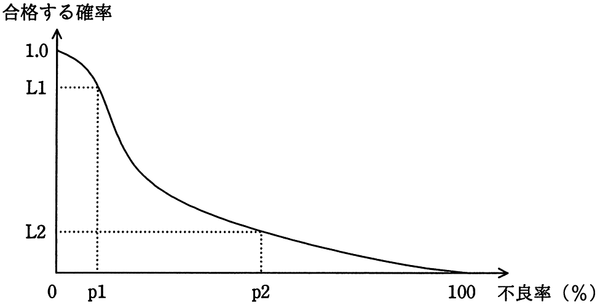

図は，ある製品ロットの抜取り検査の結果を表すOC曲線（検査特性曲線）である。この図に関する記述のうち，適切なものはどれか。

ア p1％よりも大きい不良率のロットが合格する確率は，L1よりも大きい。
イ p1％よりも小さい不良率のロットが不合格となる確率は，（1.0−L1）よりも大きい。
ウ p2％よりも大きい不良率のロットが合格する確率は，L2よりも小さい。
エ p2％よりも小さい不良率のロットが不合格となる確率は，L2よりも小さい。